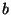
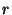
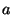

Next: 6.2 The testml script
Up: 6. Scripts
Previous: 6. Scripts
Contents
6.1 The makeml script
This script is used after a successful run of CMB.make (or
CMB.make'). It links the compiler and its interactive system,
forming a corresponding heap image. In addition to that, it prepares
a new directory containing stable CM libraries to be used with the new
image.
One way of thinking about this is to view makeml as a function
mapping a bootfile directory  to a
pair consisting of a heap image  . arch- osname and
a library directory .lib. The strings and are
optional parameters; the defaults are sml.boot. arch- os
for and sml for .
. arch- osname and
a library directory .lib. The strings and are
optional parameters; the defaults are sml.boot. arch- os
for and sml for .
The script accepts a number of options as follows:
- -o
- specifies a other than the default sml.
- -boot
- specifies a other than the default
sml.boot. arch- os.
- -quiet
- instructs makeml to greatly reduce its
diagnostic output. In particular, the names of files being linked are
not shown. The default for this can be controlled via a
boolean-valued environment variable MAKEML_VERBOSITY. If the
variable is not set, then the default is true (meaning ``verbose'').
- -verbose
- is the opposite of -quiet.
- -rebuild

- puts makeml into a different mode: After
loading the executable section of all binfiles and linking them, it
will not read any static environments, will not initialize the usual
interactive system and will not produce a heap image. Instead, it
internally invokes the equivalent of CMB.make' (SOME
""), thus recompiling everything again. When
recompilation is complete, makeml stops; the newly-built system
must be linked using a separate explicit invocation of makeml.
Notice that .boot. arch- os must be different from
.
- -rebuildlight
- is the same as -rebuild except that
the symbol LIGHT will be defined (using CMB.symval) for
the duration of the compilation. The effect of this is that no
cross-compilers will be built (which can save considerable time).
Alternative names for -rebuildlight are -light and
-lightrebuild.
- -bare
- causes makeml to build a reduced version of
the system without the compilation manager CM included. This is
useful for people who are interested in an interactive system only.
- -run 
- selects the executable for the SML/NJ runtime system.
The default is ../../bin/.run/run. arch- osname.
- -alloc 
- specifies the size of the SML/NJ garbage-collector's
allocation area. The default depends on the current machine
architecture.
The most common usage is to simply say ./makeml without any
arguments, taking advantage of the defaults as described above.
Next: 6.2 The testml script
Up: 6. Scripts
Previous: 6. Scripts
Contents
Matthias Blume
2001-07-19